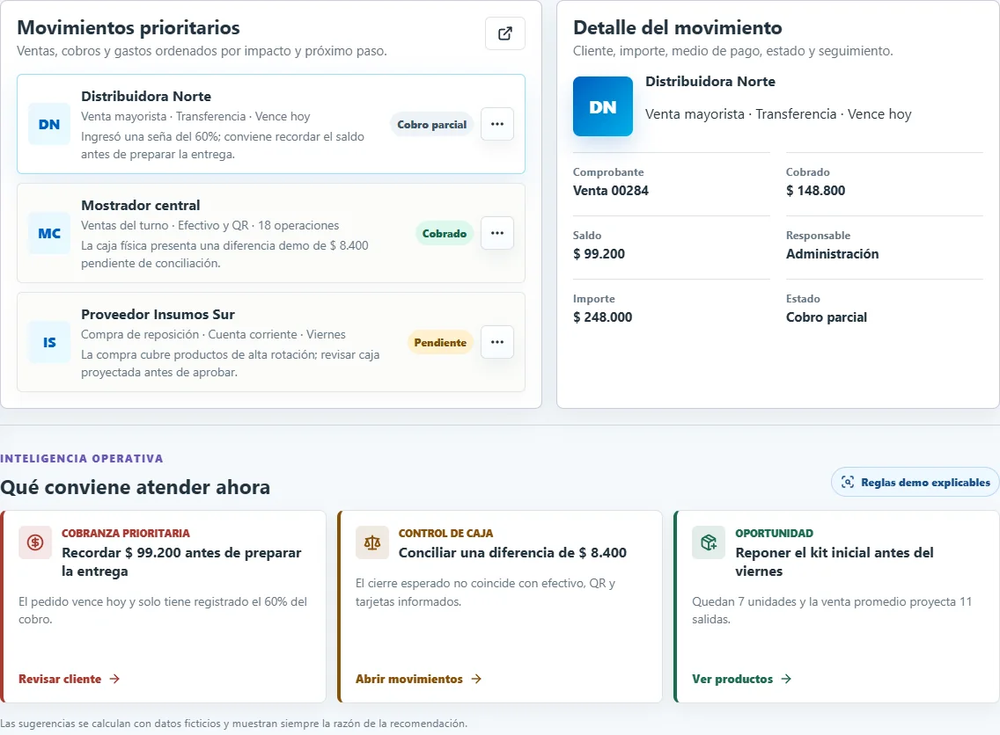

01
Sistemas de gestión
Reunimos tareas, clientes, caja, stock y documentos en una interfaz adaptada al trabajo cotidiano.
Sirve cuando- La información está repartida entre chats, planillas y personas.
- Cuesta conocer el estado real de una venta, cobro o tarea.
- Se necesita historial, permisos y responsables claros.
Resultado: menos doble carga y una única versión del estado de cada operación.
Abrir Gestión PyME